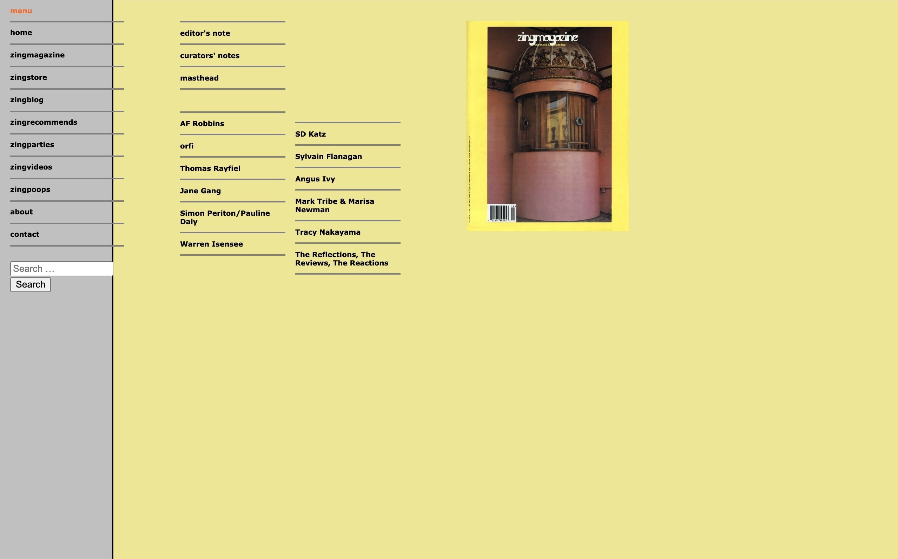
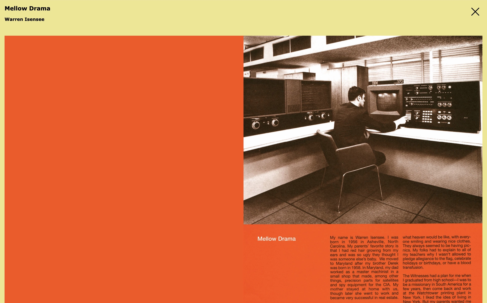
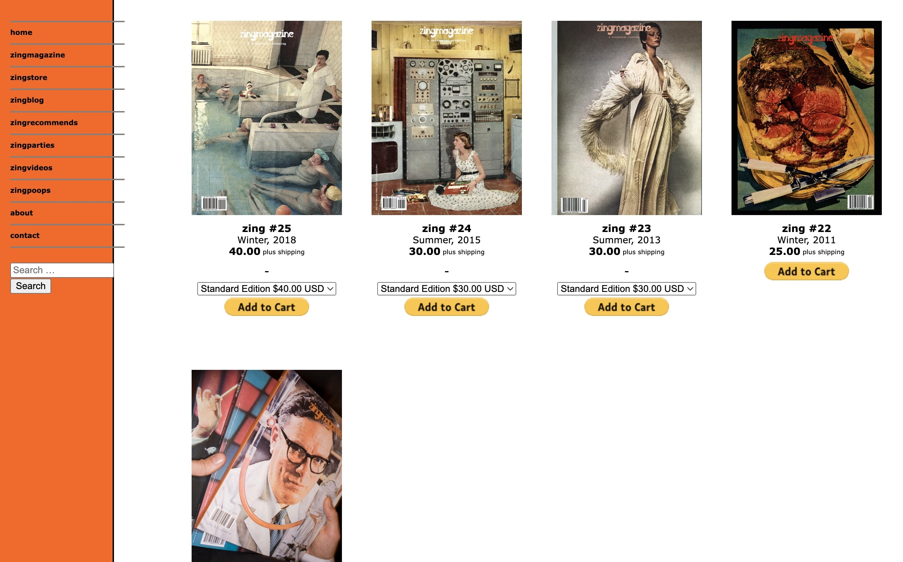
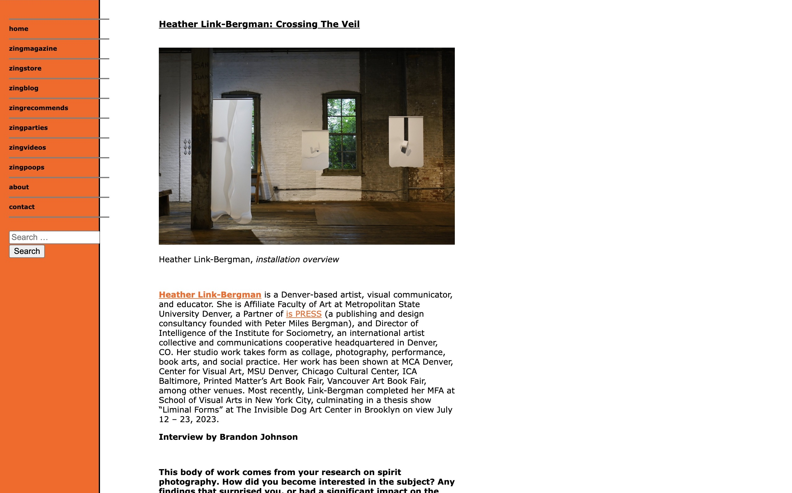
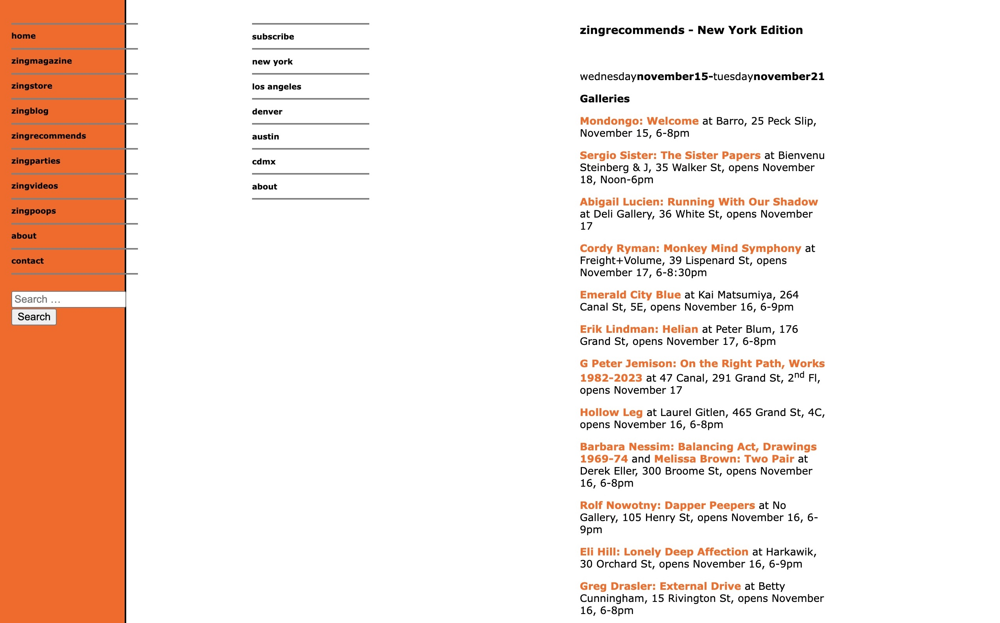
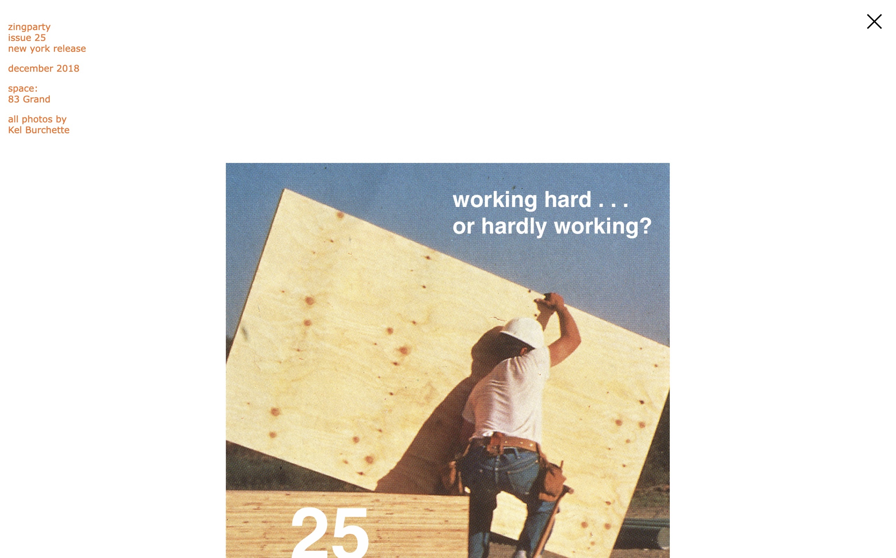
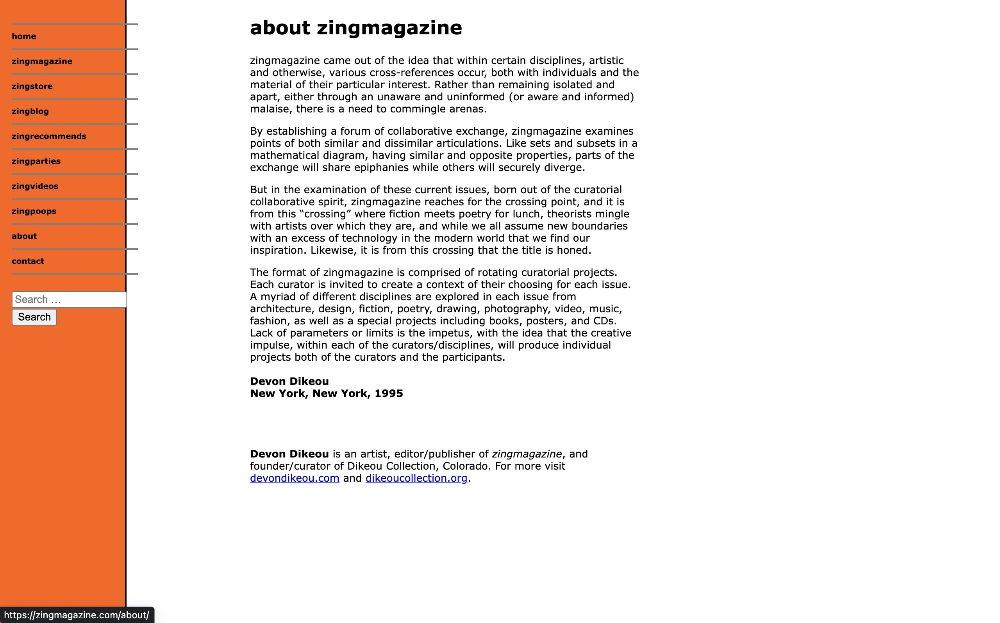
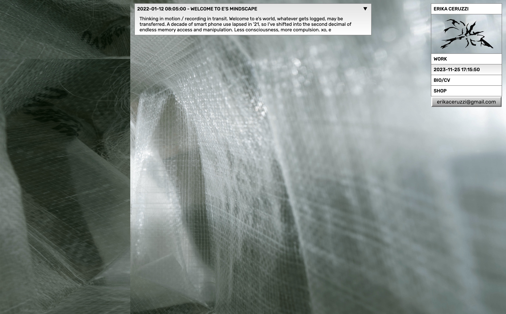
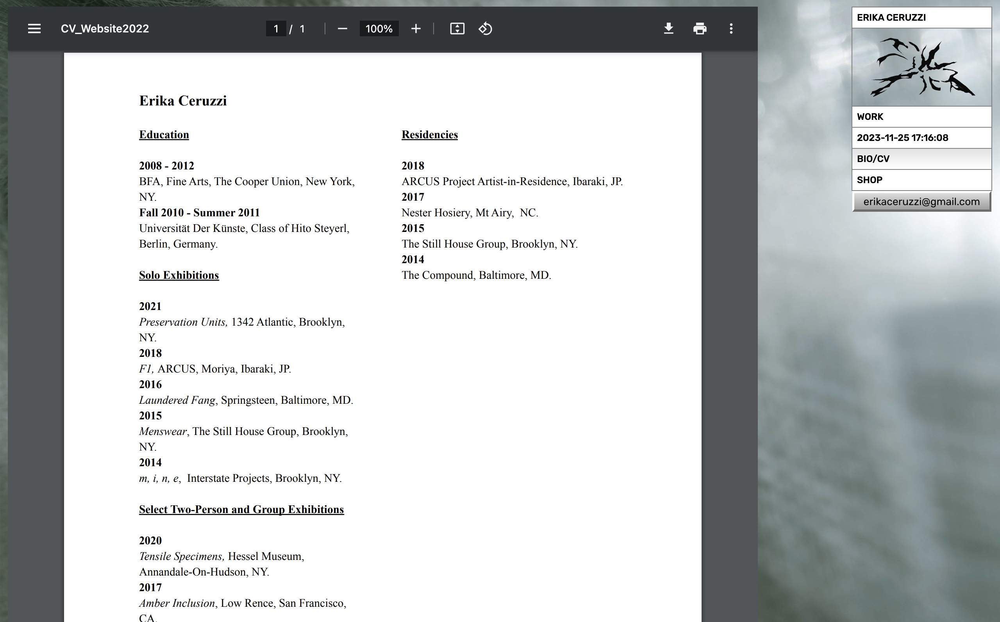

The goal of this project was to secure a first-round of funding for
Heat DAO. We were tasked to created an in-browser experience that allowed the user to simulate a multi-player universe where they could buy dance moves (as NFTs) for their avatar. I was brought onto the project by
Angeline Meitzler to collaborate in creating a 3D environment for users to purchase movement NFTs to dance with other players. Heat DAO was successful in receiving first-round funding.
Tech used: Express, React Three Fiber, Solidity, and Blender








The goal of this magazine archive project was to maintain the aesthetic of the original site and to carry it over to WordPress where the magazine could be more easily managed and re-designed as well to offer more user-friendly navigation.
Tech used: WordPress
I was recruited by designer and editor,
Mindy Seu, to be the front-end developer to help the lead developer,
Angeline Meitzler, with the finishing touches on the website before it was launched. Because of the tight deadline this became a valuable exercise in quickly getting my grounding, entering into a fully developed code base, and cleaning up remaining design and front-end functionality issues.
Tech used: Wagtail CMS using Django. Hosted on DigitalOcean over HTTPS with Nginx, Gunicorn and Redis



I love working with artists on imagining how their work can take on new meaning in the context of a website. Erika and I collaborated on the design and functionality of this site to display and archive her work.
Tech used: Kirby CMS, hosted with Github Pages
This browser-based piece was commissioned by Darren Aranofsky in 2015 before browsers had added security features to prevent the user from accessing a person’s web camera.
Tech used: Three.js